Exercise 4 — Packages, Plans & Package Keys
Design a Packages-and-Plans strategy for three departments, build it in Cloud API Management, explore and edit the generated Interactive Documentation, then create an Application and generate the Package Key that authorizes API calls.
What you'll cover
- Planning your Packages and Plans Strategy
- Navigating the Interactive Documentation Screen
- Modifying the API Specification
- Creating an Application
- Generating the Package Keys
Planning your Packages and Plans Strategy
The following activity will require you to plan and design the different Packages and Plans needed for your organizations. This design will not be permanent or fixed forever. Certain conditions and events will determine if this changes.
Let’s say that the Corporate IT Manager requested the creation of the following: a Package for each of the following divisions. The request asks for a free trial or an unlimited Plan for some of the Packages.
We will only set up the Corporate-IT configuration for this lab.
| Corporate-IT | Corporate-FIN | Corporate-HR |
|---|---|---|
| Unlimited | 500 Calls per Hour | Free Trial |
What is the purpose of these Plans?
Unlimited – this can be assigned to internal employees (API Developers) who need this type of access. Additionally, this can be a temporary solution for some external Consumer API Developer for situations where they need this type of access, like holidays or seasonal sales.
Free Trial – this is a standard best practice. You allow API Developers to try and test your APIs with a very limited Plan. The objective is to demonstrate that the API works and provides the necessary data.
Specific Calls per Quota Period – this can be seen as the normal, production Plan to be used. This is what the API Developer will be using in his/her daily production environments. The Administrator will determine the Quota that best satisfies the needs of the Consumer API Developer and considers the impact to the Cloud API Management system and Source or Backend API System.
In a production scenario, the Consumer API Developer will have to subscribe to one of these Plans, and, as the Administrator, you will have to approve it. For this training, you will test the API Definition, not a Consumer API Developer.
-
1
Go to Cloud API Management. From the top menu, select Design > Packages.
-
2
Select Create your first API Package. The New API Package popup appears. Repeat to create the following Packages. When done, select Save and Close. Go back to API Packages and create the next one.
Name Description Organization Corporate-IT_PKG This is the Package for all IT Plans. Corporate-IT Corporate-FIN_PKG This is the Package for all Finance Plans. Corporate-FIN Corporate-HR_PKG This is the Package for all HR Plans. Corporate-HR 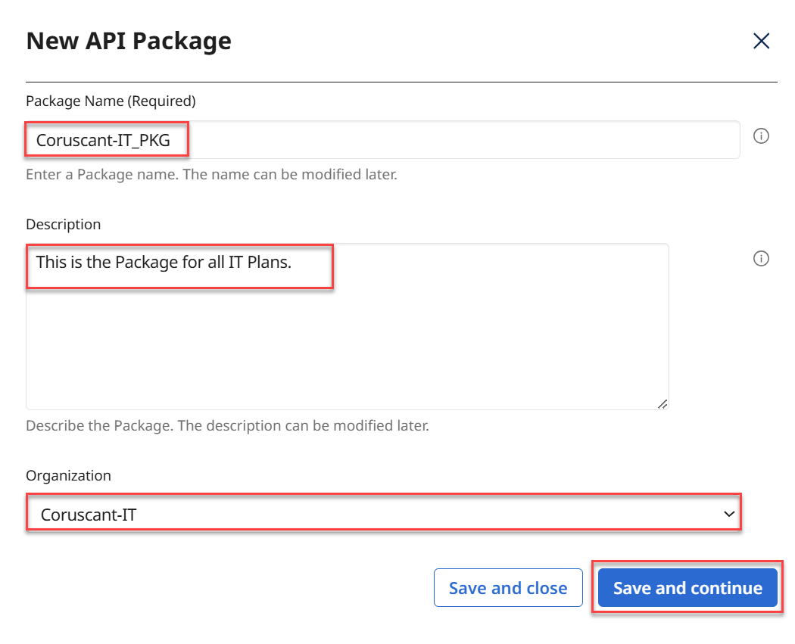
-
3
Go back to the Packages page. The Packages page will show your newly created Packages. Select the Corporate-IT_PKG link.
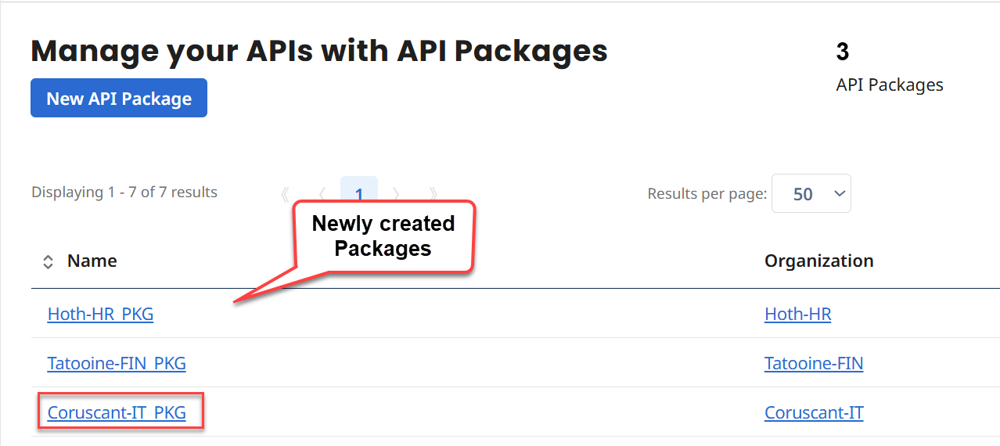
The Corporate-IT_PKG Package details page opens. Select Create your first API Plan. Following the Packages and Plans Strategy and Desing table that was presented before, create the following Plans under the corresponding Package. You will start with the Corporate-IT_PKG and then continue with the others. To facilitate the activity, leave the Description blank. For Name, enter the Plan Name below. Select Save and Close. Go back to the API Packages page and select the next Package link. Select Create your first API Plan to add the other Plans.
Plans Design Corporate-IT_PKG Corporate-FIN_PKG Corporate-HR_PKG Plan Name Plan Name Plan Name Unlimited-IT 500 Calls per Hour-FIN Free Trial-HR -
4
When done with the Corporate-IT_PKG, your screen should look like the following; showing the new Plan:
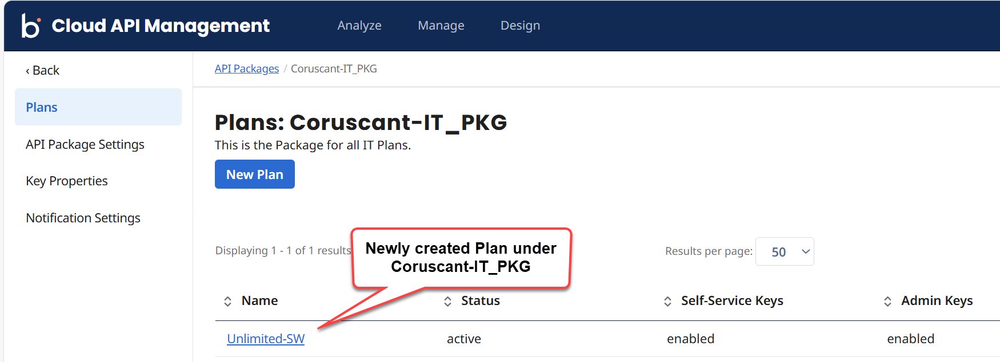
-
5
Continue and create the other Plans for the other Packages. Remember to go back and open the Package first.
-
6
Go back to the Packages Page. Now you will configure some of your Plans. Open the Corporate-IT_PKG Package and open its Unlimited-IT Plan. From the left side select and edit the Rate Limits’ Throttle, Quota and Quota Period. Select Save when done. Also, edit the Access Control as follows. Select Save when done:
For the Unlimited-IT Plan Throttle Quota Quota Period Access Control empty empty Day Administrator
Corporate-IT Administrator
Everyone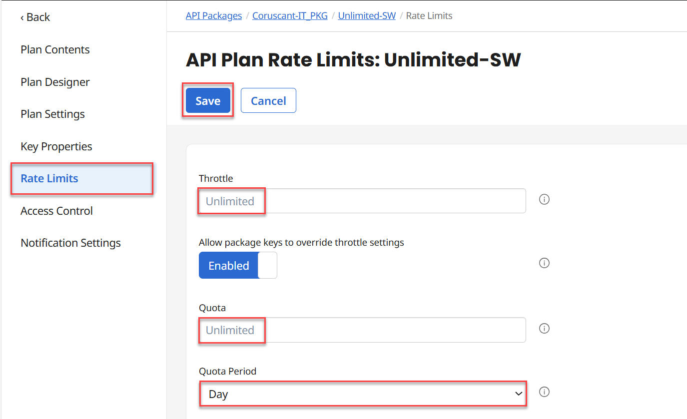
Note: An empty Throttle and empty Quota indicate unlimited access for these fields. This represents the true Unlimited Plan with no restrictions. To learn more visit the API Plan Rate Limits Help Documentation.Now that you have created and configured all your Packages and Plans, one more step is needed, Assigning the Plans to the API Definition Endpoints. Cloud API Management offers a tool called Plan Designer, which allows for easy navigation and configuration.
-
7
Go to the Packages page and open all the three Packages and all their Plans (one at a time) and perform the following action. From the left side, select Plan Designer. The Plan Designer screen appears. It shows the available API Definitions, EndPoint Definitions and Method Definitions. Since you only have one API Definition, that is the one presented. Check the box next to Swagger Petstore Ver:1.0.7 and select the right arrow > to expand the row.
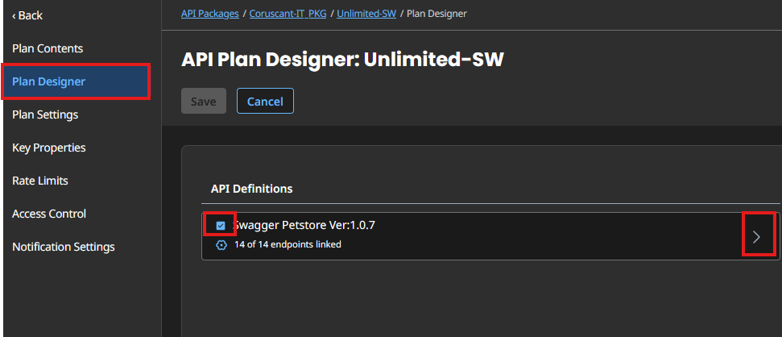
-
8
Under the EndPoints column verify that all the boxes for all the Endpoints are checked.
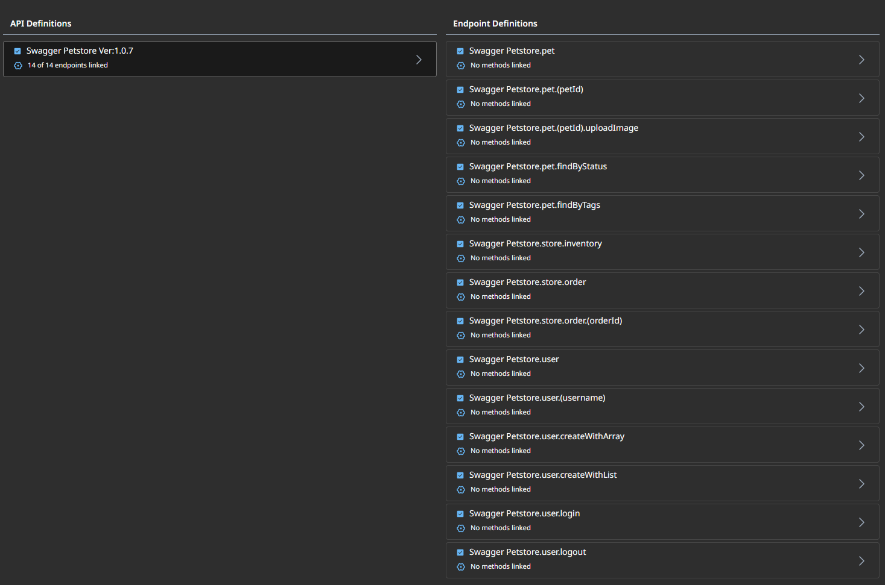
So, in this example, the Unlimited-IT Plan is assigned to the Swagger Petstore Ver: 1.0.7 API Definition with its Endpoint. Any approved API Developer can use this API Definition with an Unlimited-IT Plan. Select Save.
Note: You may have one API Definition associated with multiple Plans. And one specific Plan assigned to multiple API Definitions. -
9
Go back to the Control Center Homepage.
Navigating the Interactive Documentation Screen
When you import an API Specification to create a new API Definition, Cloud API Management generates an API Specification for the exposed Public API. Keep in mind that a Consumer client will call Cloud API Management APIs, which then connects to the backend or source API. Therefore, you will need an API Specification for the CAM API being called.
-
1
Go to Cloud API Management and select Design > Interactive Documentation.
The Interactive Documentation landing page appears and shows the Swagger Petstore Interactive Documentation entry. As indicated above, this was generated by the CAM system when you created the API Definition. Under the Title column select the Swagger Petstore link.
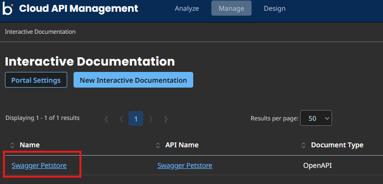
The Edit Interactive Documentation: Swagger Petstore page appears. It shows two panes. The left one is the Public API Specification, and the right one is the Swagger UI testing controls. Scroll down the Public API Specification pane to see the entire code. Scroll up to the top.
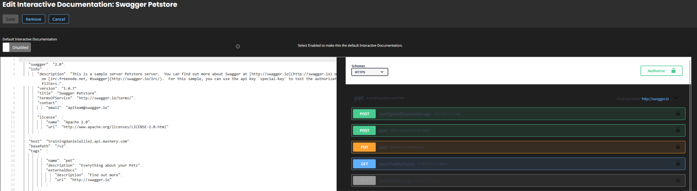
Modifying the API Specification
-
1
From the API Specification side, verify and edit the following tags. Make sure you keep the values within the quotes “ “ :
title = Swagger Petstore servers url = https://<your-tenant>.api.mashery.com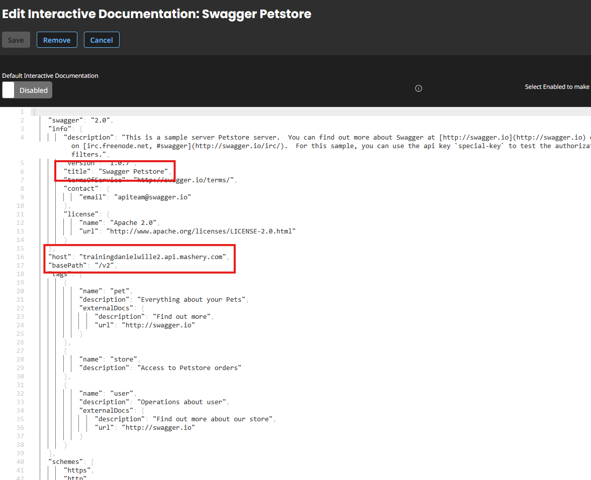
The servers tag is updated to match the Public EndPoint Address under Domains & Traffic Routing when you created the API Definition. The domain trainingboomi is NOT your domain. Look on your browser address bar to see your domain.
-
2
Verify that your values are within the quotes. If you don’t get any validation errors, scroll up and select Save.
-
3
Look at the Swagger UI on the right-side. Select the Authorize button. Observe the Available authorizations dialog. This is for you to see how this looks like in your design. For this workshop, you may ignore the OAuth Configuration. Select Close.
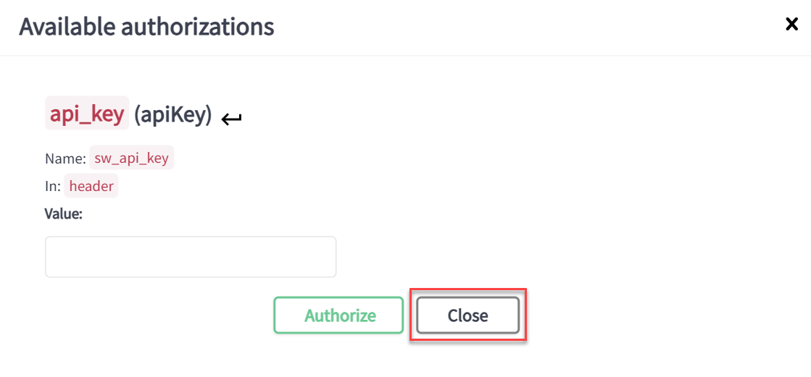
-
4
Select the GET /pet/findByStatus EndPoint. The EndPoint Expands and shows the design of the possible Response a REST client will receive when calling an API. Scroll down and verify the rest of the design.
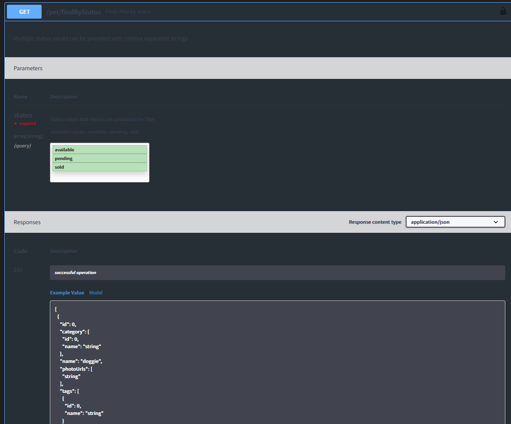
Now from the left side, scroll down to the “responses” tag of any of the Endpoints. Here, you will see the design of the HTTP Response codes. You can customize what the error will say to the API Developer. Your API Specification only has a design for the 200 HTTP code.
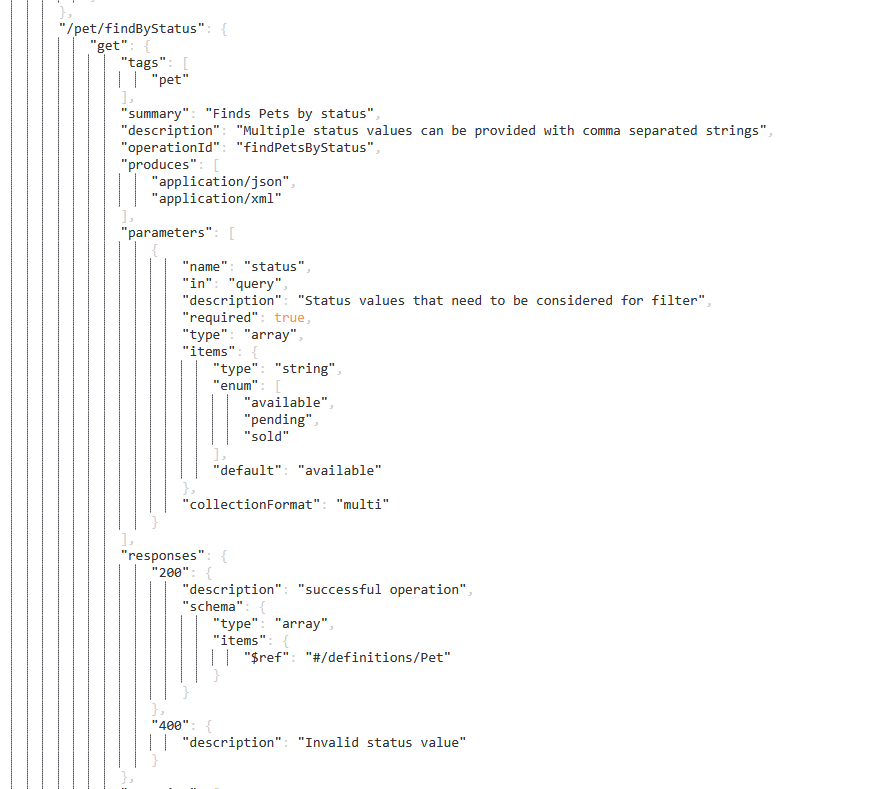
Note: Not all generated API Definitions will look the same or resemble this one. Make sure you understand the JSON syntax and how an API Definition is created before making any drastic changes.
Creating an Application
-
1
Go to Manage > Applications. Select Create your first Application.
The New Application popup appears. For Application Name enter PETSTORE_APP. For Application Owner enter your username or Platform email. If you don’t remember your username go to the Users page or look at the top-right corner of the Control Center. Select Save and close.
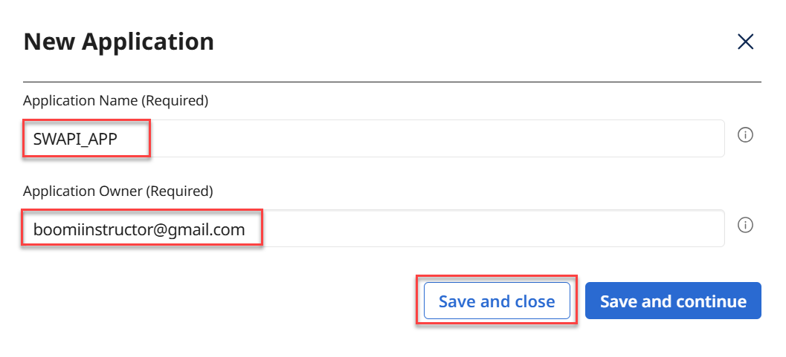
The newly created Application appears. Select PETSTORE_APP.
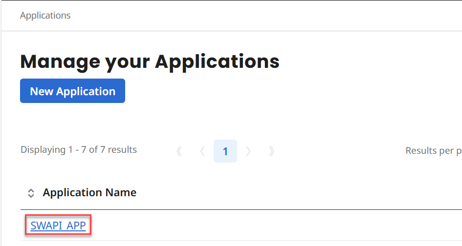
The system takes you to the Application’s Settings page. Scroll down and complete the following entries:
Description = Application for testing the Petstore API. Type = Web application with client-side calls. Usage Expected = 1-10 Preferred Protocol = REST Preferred Output = JSONNote: You may have noticed an email in your inbox after creating the Application, indicating that a new Application has been registered. Don’t select any of the links as this email is purely informational. Anyone creating or requesting an Application will receive this email. -
2
When done scroll up and select Save.
Generating the Package Keys
-
1
From the left side select Package Keys. A Package Key is generated automatically. If there is no Package Key, select New Package Key.
The New Package Key popup appears. Enter the following (some values may be pre-populated):
Application = PETSTORE_APP API Package = Corporate-IT_PKG API Plan = Unlimited-IT Expiration Date = select a date 30 days from today. Which type of key would you like to create? = Generate a new Key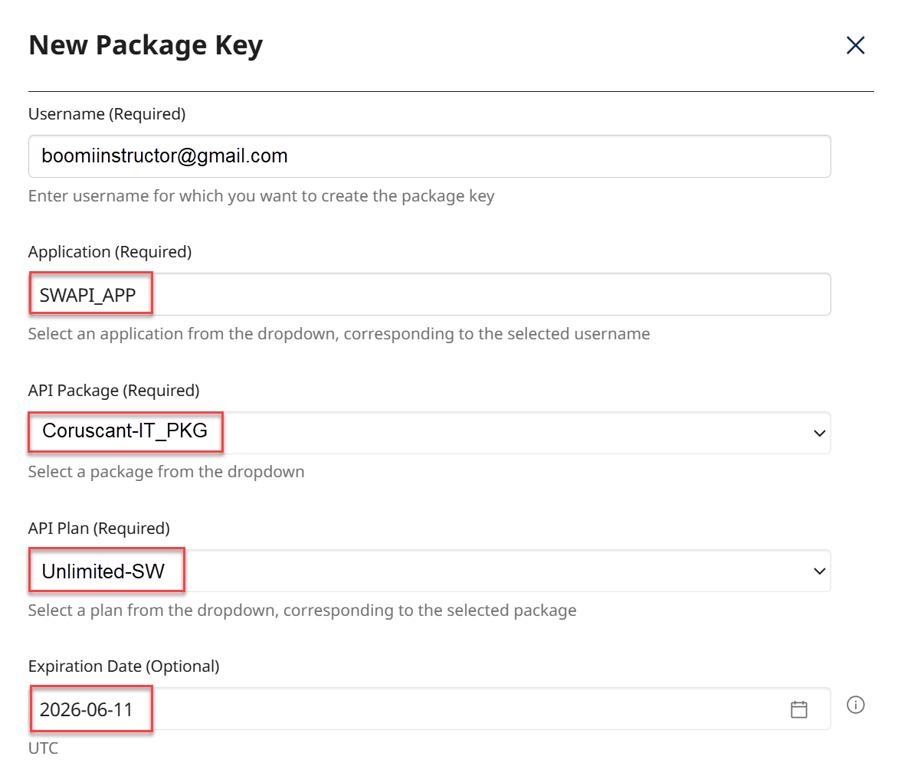
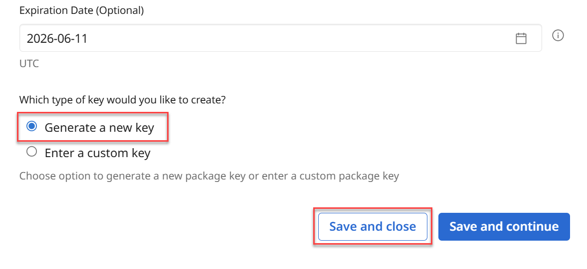
-
2
When done, select Save and Close.
-
3
The system takes you back to the Package Keys tab and shows the newly generated Package Key plus other details. Select the Key hyperlink.
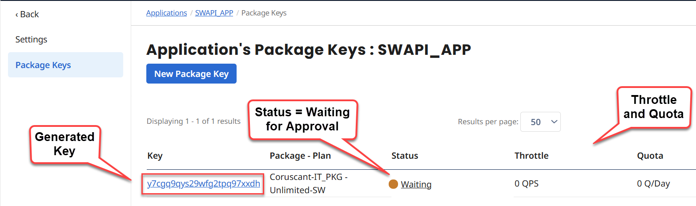
The Package Key Settings page appears. Scroll down to see the Key details.
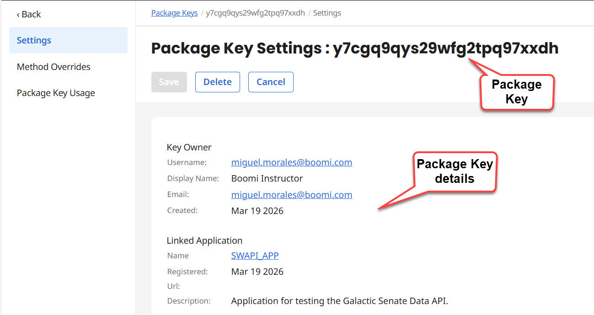
-
4
From the left navigation select <Back. From the Manage your Package Keys page select the Waiting link.
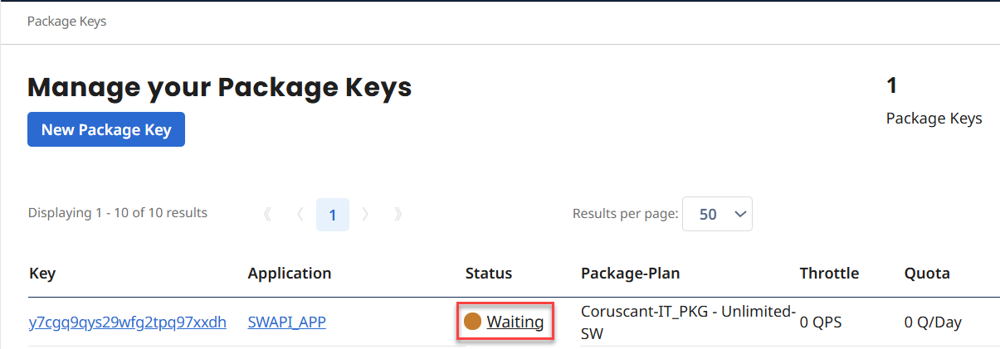
The Status changes to Enabled. One more time, select the Key hyperlink.
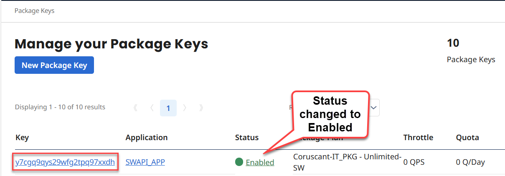
Note: Similarly, you will receive an email indicating that a new Key has been created for the Unlimited-IT Package. You can ignore this email since it is informational.